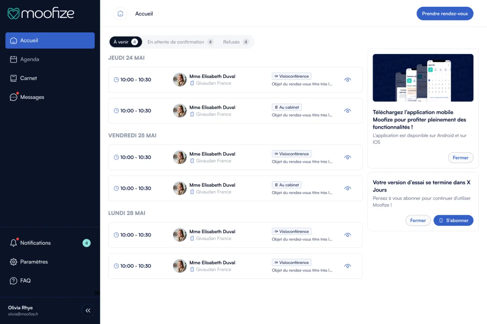
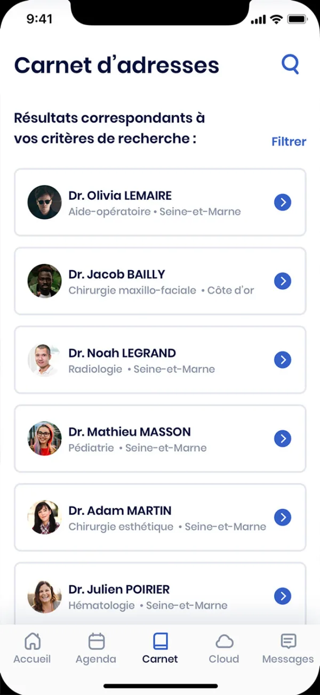
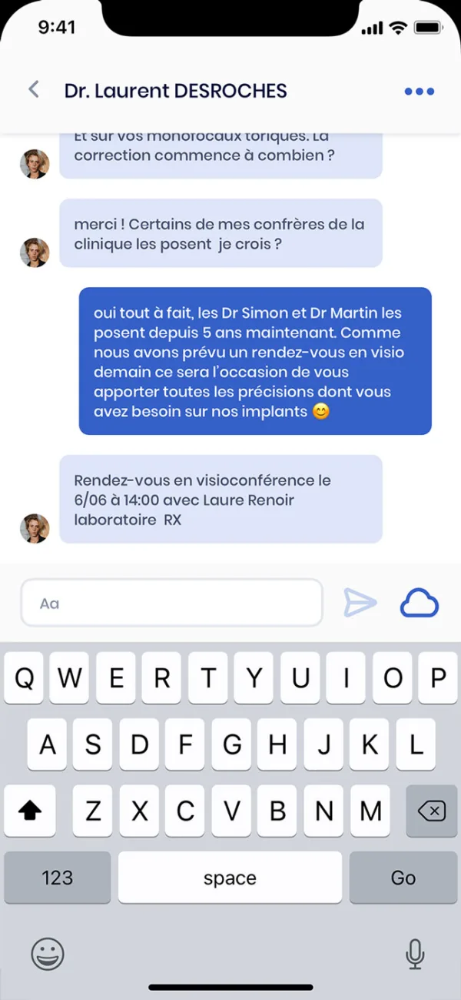
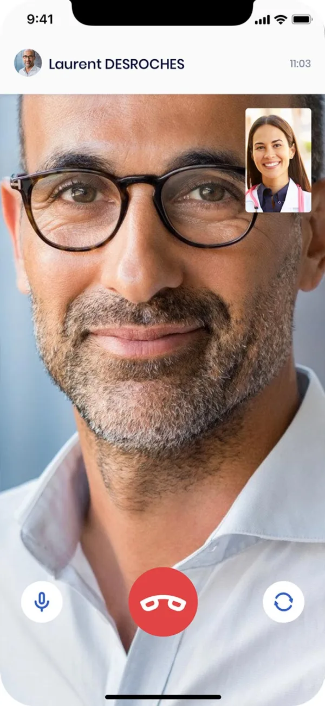
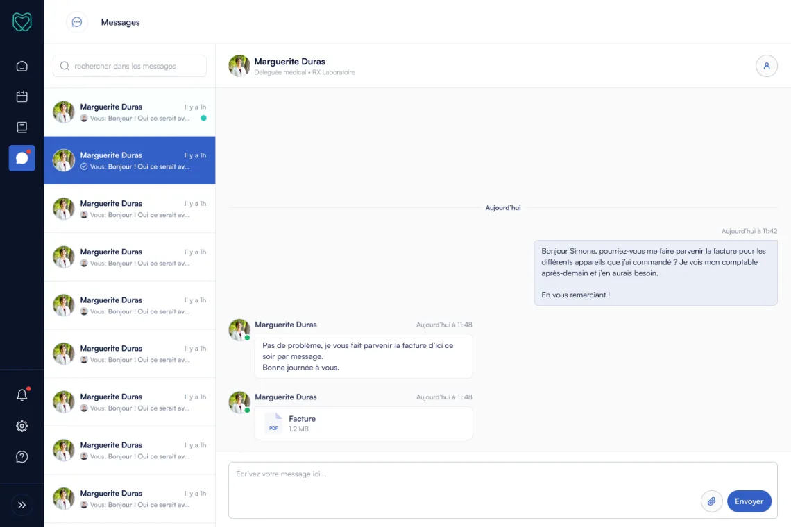
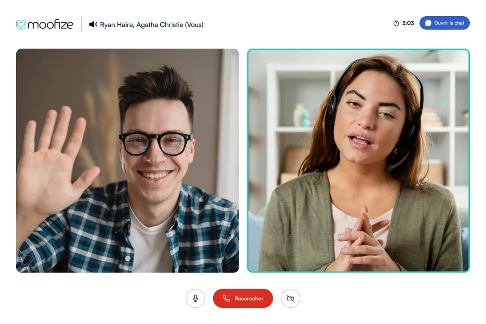

Moofize organise les rendez-vous entre les professionnels de santé et l'industrie de la santé : créneaux de réception, demandes de rendez-vous, messagerie et visio. Akago la développe entièrement depuis fin 2020 : app iOS et Android publiée en 2021, web app en 2024 à partir de la même base de code Flutter, serveur Node.js, puis un agenda synchronisé avec Outlook depuis 2025.
Le contexte
La visite médicale, c'est la rencontre entre un professionnel de santé et un représentant de l'industrie : délégué d'un laboratoire, d'un fabricant de matériel, d'un fournisseur. Côté praticien, les sollicitations arrivent par téléphone ou à l'accueil du cabinet, rarement au bon moment. Côté industrie, décrocher un rendez-vous demande des appels répétés, sans visibilité sur les disponibilités.
Moofize, startup lyonnaise, a imaginé une application pour remettre de l'ordre dans ces échanges : le praticien décide quand il reçoit, et sous quelle forme ; le délégué voit les créneaux ouverts et réserve. L'app est gratuite pour les professionnels de santé ; les entreprises de santé s'abonnent.
Nous avons rejoint le projet dès les maquettes, fin 2020. Tout restait à construire : l'architecture, l'app, le serveur, la publication sur les stores. Depuis, tout le développement de Moofize est fait chez Akago : choix techniques, app, serveur, back-office, mises en ligne et maintenance.
Deux publics, deux parcours
Pour les professionnels de santé
Médecins, pharmaciens, vétérinaires, établissements : chacun crée ses créneaux de réception, ponctuels ou récurrents, au cabinet ou en visio, et peut en suspendre certaines dates. Les demandes arrivent dans l'app et s'acceptent ou se refusent en un clic. À l'inscription, le numéro RPPS du praticien est vérifié par le serveur.
Pour l'industrie de la santé
Le délégué cherche ses interlocuteurs dans un carnet d'adresses filtré par profession, spécialité et département, consulte les créneaux libres et demande un rendez-vous, avec un message s'il le souhaite. Son accueil regroupe les rendez-vous à venir, en attente ou refusés.
Une messagerie et une visio intégrées
Les échanges restent dans un canal professionnel, séparé des messageries personnelles : messages, pièces jointes, notifications. Le jour du rendez-vous, la visio se lance depuis Moofize, sur le téléphone comme sur l'ordinateur, sans autre outil à installer.
Un espace entreprise et un back-office
Une entreprise invite ses collaborateurs et gère son abonnement ; l'équipe Moofize administre les sociétés et les utilisateurs depuis un back-office.



Du mobile au web, sans tout réécrire
L'app iPhone et Android est sortie sur les stores en 2021. Restait l'ordinateur : au cabinet comme dans les entreprises de santé, l'agenda se gère aussi sur grand écran.
Nous avons construit la web app en parallèle des évolutions de l'app mobile, sur environ dix-huit mois ; elle est sortie en avril 2024. Elle n'a pas demandé un second projet : la logique métier (données, règles, états) est commune, seules les interfaces diffèrent entre mobile et web. Une correction faite une fois profite aux trois plateformes.


Six ans d'évolutions
L'agenda synchronisé avec Outlook
Depuis 2025, l'agenda des praticiens est connecté à Outlook. Les rendez-vous Outlook apparaissent dans l'agenda Moofize, et un créneau déjà occupé n'est plus proposé aux délégués. La synchronisation se fait côté serveur : les accès Microsoft du praticien restent sur le serveur.
Le travail invisible
Montées de version de Flutter et de Firebase, refonte de l'architecture en 2025, premiers tests automatisés, déploiement continu vers les stores : c'est ce qui garde une app publiable et maintenable après six ans.
Architecture et choix techniques
| Composant | Technologie |
|---|---|
| App iOS, Android et web | Flutter, une seule base de code : logique commune, interfaces mobile et web distinctes |
| Données en temps réel | Firebase Firestore |
| Authentification | Firebase Authentication |
| Serveur | Node.js et TypeScript (Express), en conteneurs Docker |
| Visio | Agora, sur mobile et dans le navigateur |
| Agenda | Synchronisation Outlook (Microsoft Graph), export au format iCal |
| Notifications | Firebase Cloud Messaging et e-mails transactionnels |
| Hébergement de la web app | Firebase Hosting |
| Suivi | Sentry, pour les erreurs en production |
| Publication | Déploiement continu vers l'App Store et Google Play |
Pourquoi Flutter. Moofize a commencé par le mobile, mais l'ordinateur était une évidence pour la suite. Avec Flutter, la web app est sortie de la même base de code que l'app : pas de seconde équipe, pas de fonctionnalités qui divergent d'une plateforme à l'autre.
Firestore pour le temps réel, un serveur pour le reste. Messagerie, demandes de rendez-vous, notifications : l'essentiel de Moofize se passe en direct. Firestore pousse chaque changement vers les appareils concernés sans serveur de temps réel à maintenir. Le serveur Node.js garde ce qui doit rester côté serveur : vérification RPPS, jetons de visio, disponibilités, synchronisation Outlook, e-mails.
Chiffres clés
| Indicateur | Valeur |
|---|---|
| Collaboration | Depuis novembre 2020, en cours |
| App iOS et Android | Sur les stores depuis 2021 |
| Web app | Avril 2024 |
| Plateformes | iOS, Android, web |
| Commits | Plus de 1 700, sur l'app et le serveur |
| Agenda | Synchronisé avec Outlook depuis 2025 |
| Financement | En partie par la Bourse French Tech (notre guide) |
Ce que ce projet illustre
Un produit se construit dans la durée
Six ans après, Moofize n'est pas « terminé » : nouvelles demandes des utilisateurs, intégrations comme Outlook, montées de version. Un partenaire technique stable évite de réapprendre le projet à chaque étape.
Penser au web dès le mobile
Partir sur une base de code partagée a rendu la web app possible sans réécriture. C'est un choix fait en 2020 qui a fait la différence trois ans plus tard, et donc sur le budget.
Une seule équipe, du serveur aux stores
App, serveur, back-office, publication : tout est fait chez Akago. Une équipe responsable de bout en bout, c'est moins de coordination entre prestataires et des évolutions qui ne restent pas bloquées entre l'app et le serveur.
Ils le disent mieux que nous
« Nous collaborons avec Akago depuis 4 ans pour le développement de notre application web et mobile, nous sommes pleinement satisfaits de leur accompagnement. »
Moofize
Un projet similaire ? Prise de rendez-vous, agendas synchronisés, messagerie, visio, une app mobile et web à partir d'une même base : ce sont des briques que nous maîtrisons (notre offre SaaS). Parlez-nous du vôtre.
Contactez-nous directement← Retour à la présentation du projet Moofize · Toutes nos réalisations